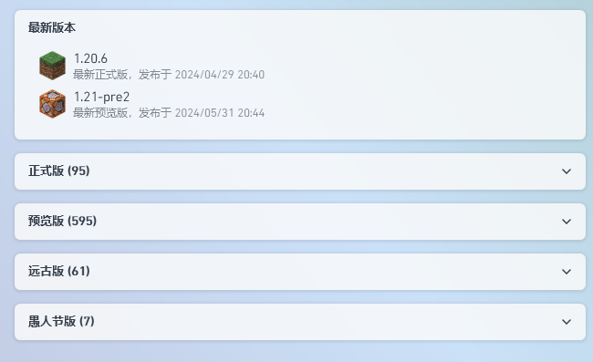
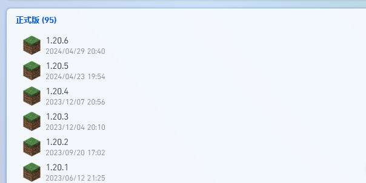
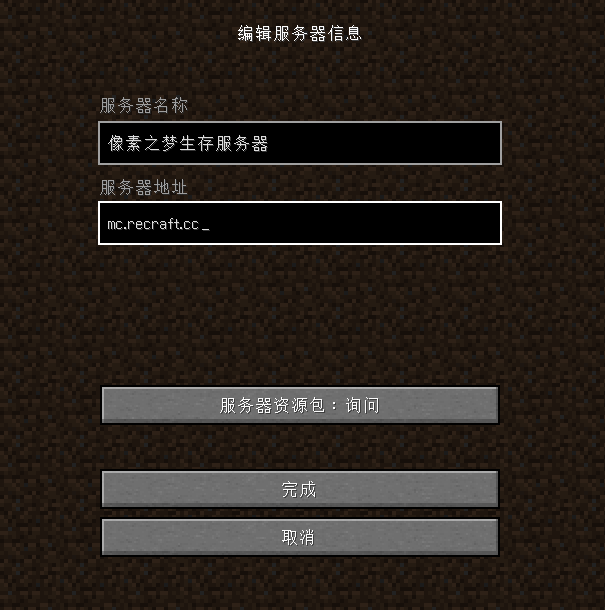

像素之梦服务器新手生存手册
目录
1.序
2.开始的开始
-下载启动器
-下载Minecraft版本
-进入服务器
3.服务器体系
-货币体系
-金币
-点卷
-像素币
-装备体系
-淬炼体系
-宝石体系
-宝珠体系
4.鸣谢
这是一个由Minecraft服务器 像素之梦 玩家 driver166 组织主导的第三方像素之梦服务器教程，并不由腐竹、管理员进行授权或直接管理，有遗失之处请多多指教~
2.1 下载Minecraft启动器
目前的游戏启动器有很多种，像 PCL2 BakaXL 还有 HMCL，那么为了照顾许多的新入坑Minecraft的萌新玩家们，本手册均采用了由龙腾猫跃开发的PCL2启动器。
·下载PCL2
打开浏览器，输入下载地址，密码填pcl2，点击确认。点击Release 2.x.x，然后点击普通下载。不出所料的话，你的浏览器就会开始自动下载压缩包了。
下载之后打开你的下载文件夹，右键刚刚下载下来的压缩包，选择“全部解压缩”(Windows 11)或“解压到 你的下载文件夹路径\Release 2.x.x”(Windows 10)。
解压完成之后，双击打开刚刚解压到的文件夹，双击Plain Craft Launcher.exe，这样，你就成功地在自己的电脑上运行了一个Minecraft启动器。
Q&A:
Q:如果他说我没有安装.NET环境怎么办?
A:去官网下载.NET4.5.0。
2.2 下载Minecraft版本
打开PCL2，点击下载，你会看到像这样的一堆东西:

然后点开"正式版":

点击1.20.4，就是这个：
你可以选择安装原版，Forge，或者Fabric。点击"开始安装"，PCL2就会自己帮你下载版本了。
Q&A:
Q:安装不成功怎么办?
A:多试几遍，或者换个网络试试。
2.3 进入服务器
在下载好了版本之后，你就可以启动游戏了(哦耶！！！)。进入PCL2界面中的"启动"部分的框框

中填入自己的用户名，然后按下面的"启动游戏"，等待一会，PCL2就会启动游戏了。
在进入服务器之前，我们还需要进行一些些小小的设置(非必须，不想设置的玩家可以跳过这一部分)，这可以让你的游戏体验变得更加好。
1.点击选项，点击视频设置，把"垂直同步"设置调为"关"
2.同样是在视频设置，把最大帧率拉到最大
3.还是视频设置，把渲染距离和模拟距离都调成6
调完这些，你就可以开心的进入服务器玩耍了。
回到最初始的界面，点击"多人游戏"，再点击"添加服务器"。上面的服务器名称可以随便填，这里以"像素之梦生存服务器"为例。然后，在下面的服务器地址里填上像素之梦服务器的地址，也就是mc.recraft.cc:

点击完成，你就添加好了服务器。
选中刚添加的服务器，点击"加入服务器"，你就成功的进入了服务器。进入服务器后按照聊天框的指引注册或者登录，如果你发现有人用了你的id，那么可以关闭游戏，换个用户名在试试。
如果你成功注册了，那么你手上应该会出现一个末影之眼。手持它并右键，你就可以选择你想去的区。
注意！各个区之间的数据并不互通，建议只玩一个区！